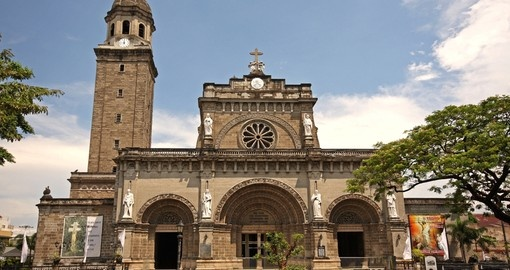
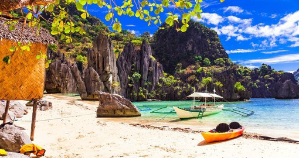
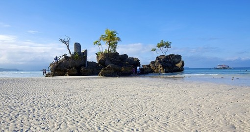
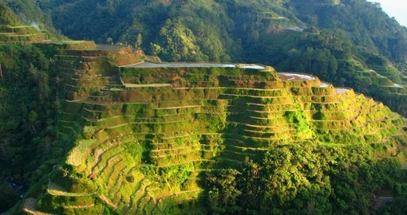
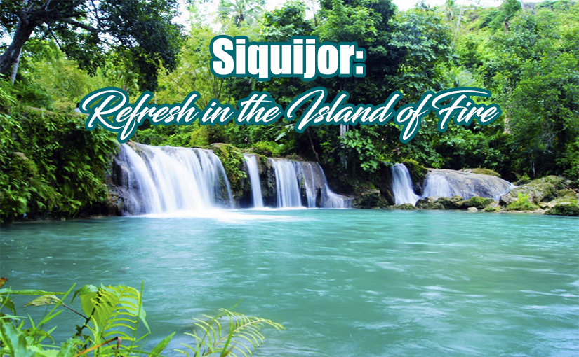

1. Intramuros

Manila Cathedral in the Intramuros area of Manila is a popular destination while on you Philippine vacation.
1234
Manila Cathedral in the Intramuros area of Manila
Philippines Country Maps
Officially known as the Republic of the Philippines, the Philippines is an archipelago nation consisting of 7,641 islands in Southeast Asia. This may sound like a daunting number of islands, but only a few islands attract visitors on a Philippines vacation. The country is generally grouped into three main collections of islands: Luzon in the north, Visayas in the centre, and Mindanao in the south.
Over 100 million people live in the nation, making it one of the largest countries in the world. Manila, on the northern island of Luzon, is the nation’s capital, but the southern islands and their beaches and resorts attract most of the tourists.
2. El Nido
El Nido is located at the extreme northernmost tip of Palawan. It actually consists of around 45 islands and islets. The scenery here is stunning with towering limestone cliffs, clear blue lagoons, lush jungle and white sand beaches. It has been called “The Philippines’ Last Frontier”. The waters are teeming with marine life and it is the largest marine sanctuary in the country. Hence the many dive sites. Arrive from Manila at the airport in the north of Palawan and then take the boat transfer to the Apilit Island Resort with its scenic landscapes, white sand beaches, clear blue seas and wealth of wildlife. You will have two full days of leisure to enjoy the beautiful surroundings before flying back to Manila.
3. Boracay
Boracay is a small island located 315 kilometres/195 miles south of Manila and reached by air followed by a boat ride. It is only 7 kilometres/4 miles in length and the main beach is 4 kilometres/2.5 miles long. The island has received many accolades and awards from numerous sources and, in fact, was voted World’s best island by Travel and Leisure magazine. This world class resort has beautiful white sand beaches and offers many amenities in the way of restaurants, bars, pubs and nightclubs. For watersports enthusiasts, there are excellent facilities for windsurfing, scuba diving and snorkeling plus there is a first class 18 hole golf course.
4. Banaue Rices Terraces Discovery
5.
Magic and mystery come to mind when someone hears Siquijor. While some stories could be true, the only magic you should look forward to is the one brought by the enchanting Siquijor tourist spots that will make you want to walk straight into a beautiful trap. It is a small island province located in the Central Visayas region oozing with pristine beaches, beautiful diving spots, waterfalls, and a cave. This tourist destination in the Philippines used to be known as the Island of Fire enveloped by mystic traditions such as witchcraft, healing, spiritual rituals.